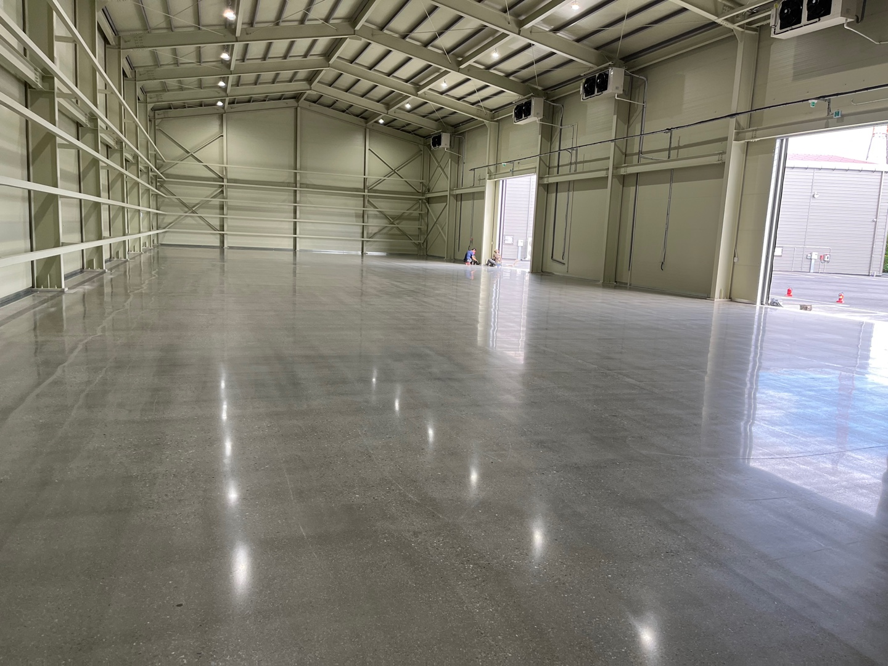
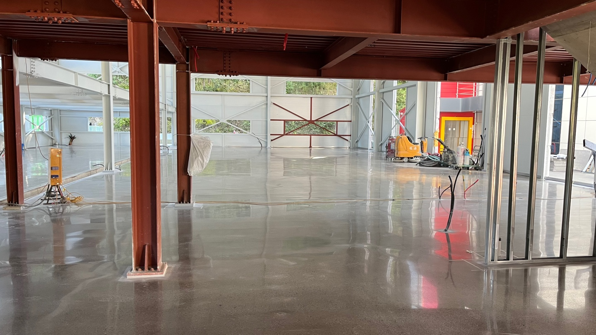
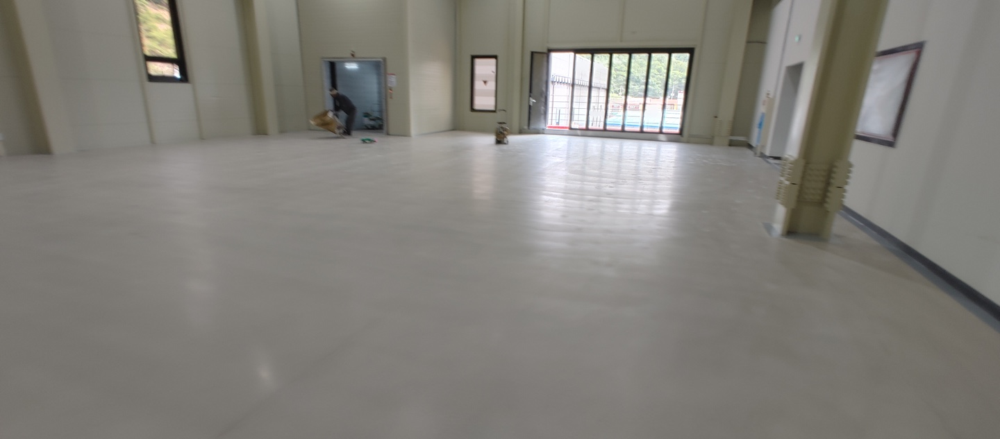
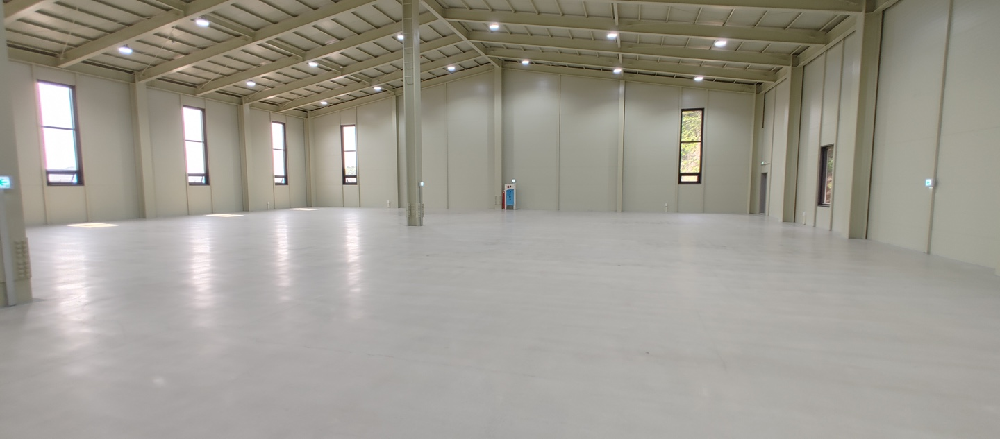
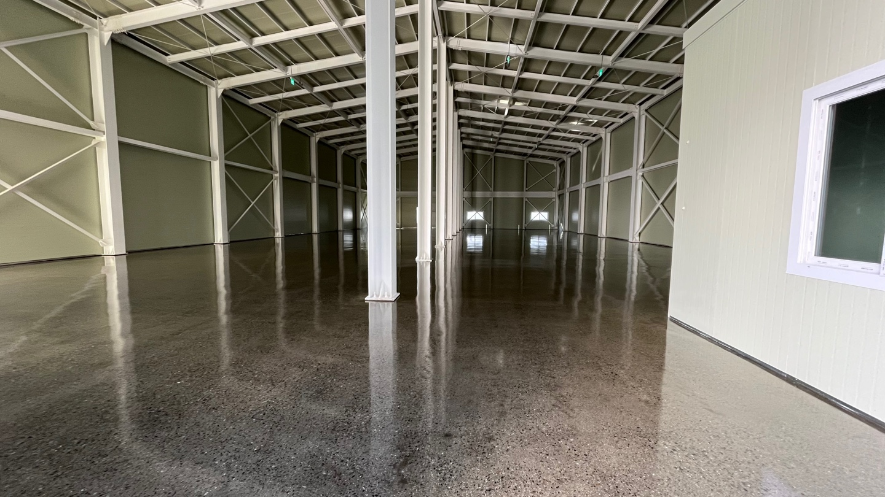
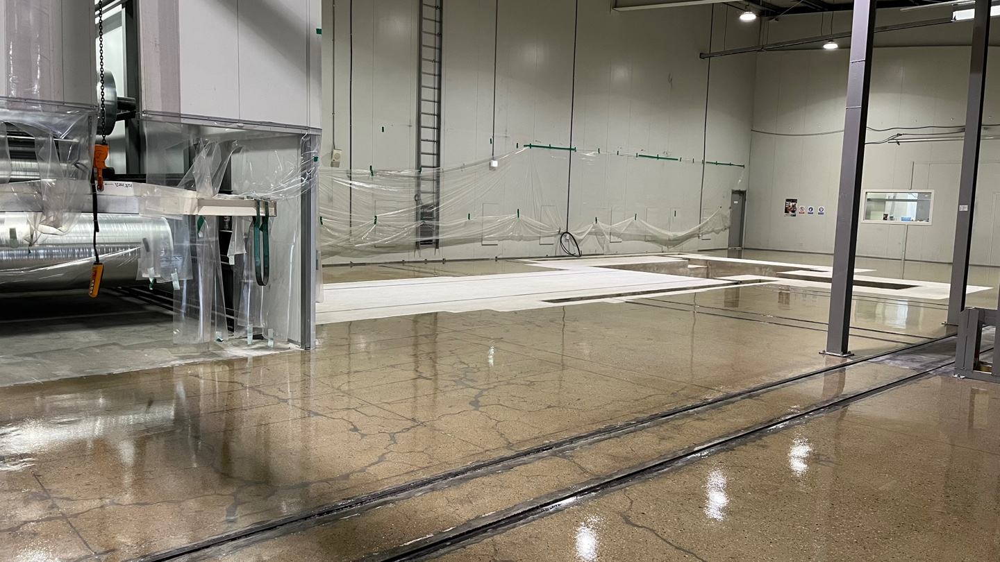
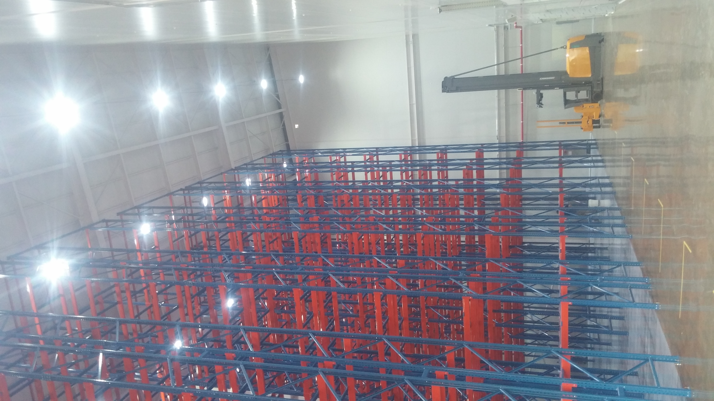
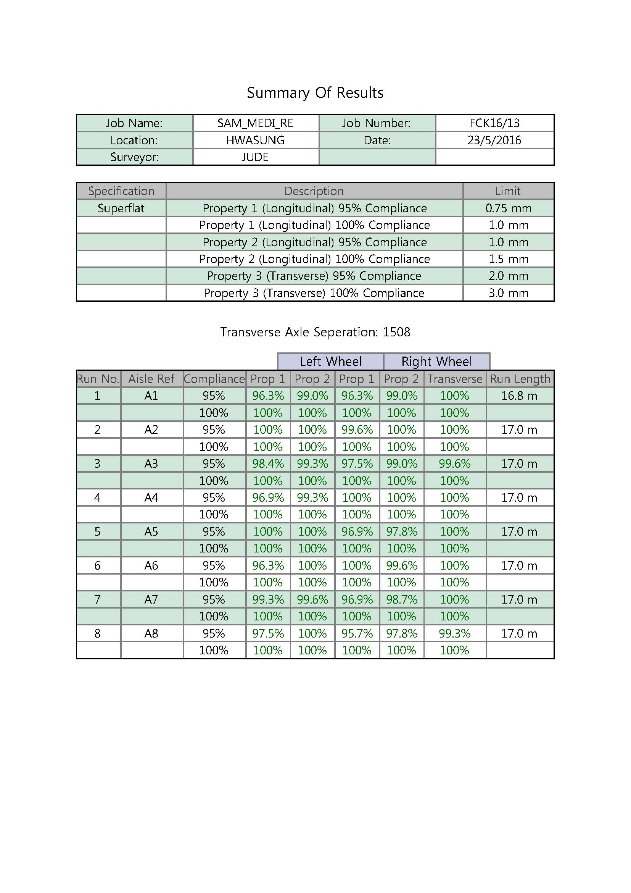

콘크리트 폴리싱은 콘크리트를 갈아서 더 곱게 갈아서 광택을 내어 마감짓는 바닥 마감공법이다. 이 공법은 국내에 들어온지 10여년이 넘어가지만 그전에 6,70년대에 도끼다시바닥 마감으로 기억하는 사람들이 많다. 오늘날 콘크리트 폴리싱은 바닥에 광택이 나면 폴리싱인줄 안다. 그렇게 생각해도 상관이 없다.
- 콘크리트 폴리싱
- 세미 폴리싱
- 세라믹 폴리싱
- 초평탄 연마 보수
풀 폴리싱(콘크리트 폴리싱)
이런 표현은 지구에서는 존재하지 않는 표현이다. 그러나 언젠가부터 한국에서 표현이 되기 시작하였다. 이유는 이보다 하위마감인 세미폴리싱에서 설명하겠다. 폴리싱은 메탈연마 단계를 거쳐 레진연마 상위단계까지 연마후 콘크리트 보호제(전용씰러)를 도포하고 고속광택 작업을 하여 마감짓는 공법이다. 주로 미국, 호주등에서 발달된 마감공법이다.


세미 폴리싱
매탈연마부터 레진연마 하위단계에서 연마 후 콘크리트 보호제(전용씰러) 도포 고속광택 또는 씰러도포 만으로 마감한다. 이 표현방식은 웃픈예기지만 나와 같은 콘크리트 폴리싱 업체들이 "풀 폴리싱"(콘크리트 폴리싱)으로 마감공사를 하여도 또렷한 광택이 표현되질 않는 것에서 시작되었다. 즉 전체적으로 시공능력이 떨어지니 이런 표현이 생기게 되었다. 그러니 어쨌든 먹고는 살아가야하니 "세미 폴리싱"이라고 이름을 지어 "풀 폴리싱"을 대체하면서 공사단가도 낮아지게 된다. 세미폴리싱 말그대로 반광이다. 흐리멍텅하고 뿌연광택 그러나 콘크리트 노출마감에서 가져오는 장점은 다 가지고있는 저단가 보급형 마감이 되었다.


세라믹 폴리싱
가장 최근에 생겨난 마감으로 역시 한국에만 존재하는 마감이다. 당사는 이 마감을 세라믹코팅이라고 부르지만 대부분의 타업채들은 세라믹 폴리싱이라고 표현한다. 그렇게 표현해야 좀 있어보이나보다. 본질은 어쨋든 코팅이고 기존 에폭시 도장마감 보다는 월등히 뛰어난 장점이 많다. 단가역시 고단가였었고 최근에는 단가가 에폭시라이닝 대비 상대적으로 경쟁력이 생겨 바닥마감에 접근이 좋아졌다. 매탈연마 시작으로 레진연마 하위단계까지 작업후 세라믹 도장하여 광택과 내구성 기타 오염에 강한 마감이다.


초평탄 연마보수
우리가 생활하는 바닥은 대다수의 사람들은 느끼지 못하지만 물결이 치고있다. 그러나 물결치는 바닥의 최상단과 최하단의 레벨차이는 심하다. 그 상단과 하단의 레벨차를 최소한으로 연마하여 줄여주는 작업을 평탄화 작업이라하고 거기서 더 평평하게 연마해주는 작업을 초평탄연마라고 한다. 당사와 같은 콘크리트 연마업체들이 가장 최고의 기술로 인정하는 마감공법이다. 그만큼 가장어려운 시공법이고 대부분의 업체들이 시공을 두려워한다. 초평탄바닥을 측정하여 인증을 받는 만큼 그 심적부담감이 상당하다. Floor Flatness Specification with TR-34 4th edition 까지 개정이 되었고 앞으로 개정이 더 될수도 있다. 3th 기준당시 Super Flat 등급은 모든 업체들이 연마로 보수 할 수 없다고 전 지구적으로 알고있었으나 한국의 한 업체가 지구에서 최초로 연마로서 보수를 성공시켰다.

